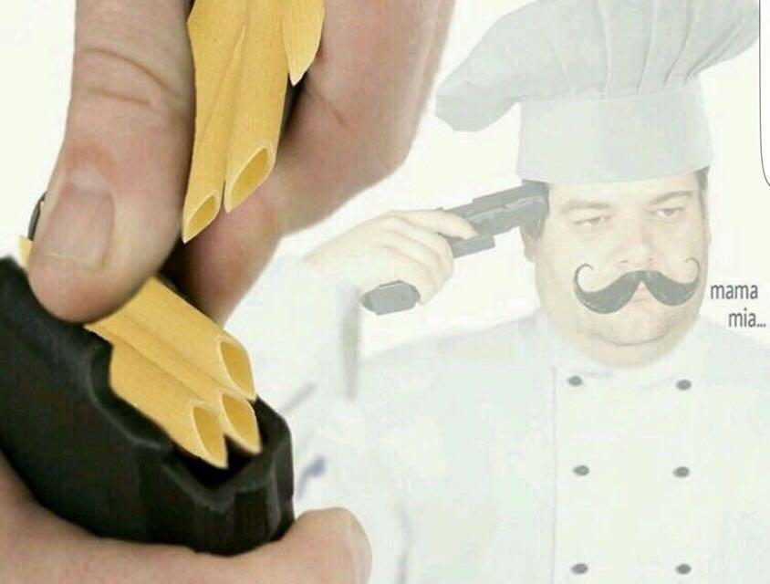

Spaghetti is the truest form of perfection. It has been said that in many cultures they bathe in a nightly spaghetti bath to help their skin create a youthful glow.
 Spaghetti is a long, cylindrical pasta usually served with tomato sauce, herbs, and grated cheese. This dish has been usually attributed to Italian cuisine and culture, and has gained attention online via numerous memes.
Please consider signing this petition to make spaghetti a required meal on every ariplane flight.